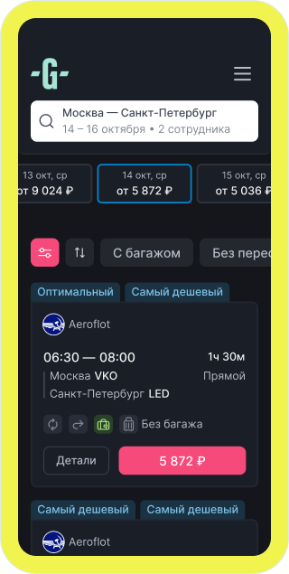
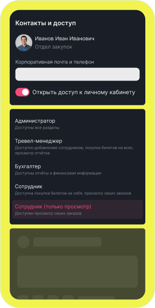
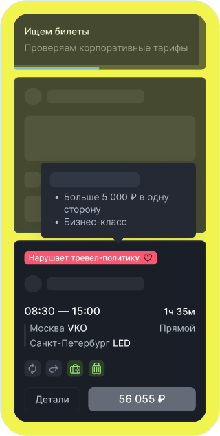
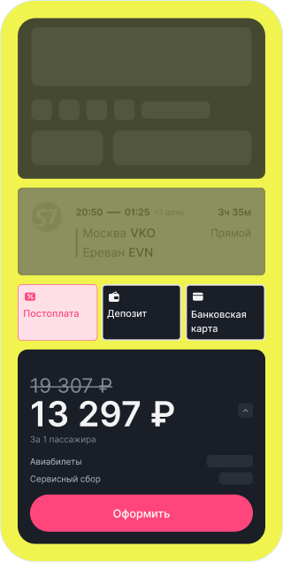
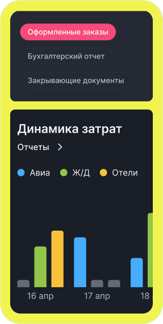
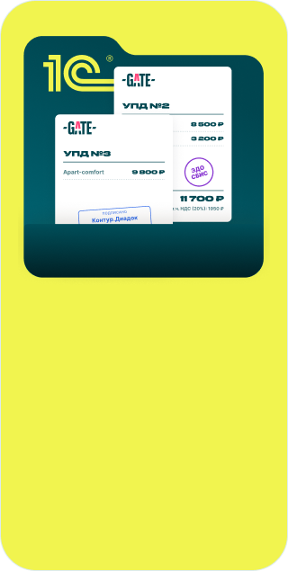

Удобный
личный кабинет
Бронируйте билеты и размещение так же легко, как в привычных сервисах для путешествий
Посмотреть демонстрациюБронируйте билеты и размещение так же легко, как в привычных сервисах для путешествий
Посмотреть демонстрацию
Импортируйте данные из корпоративных систем через API, приглашайте пользователей по email, назначайте роли и права доступа
Посмотреть демонстрацию
Настройте лимиты расходов, правила бронирования и маршруты согласования
Посмотреть демонстрацию
Оплачивайте командировки с постоплатой до 30 дней, с расчётного счета, банковской картой или по QR-коду
Посмотреть демонстрацию
Передавайте данные в 1С, обменивайтесь документами через ЭДО и автоматически получайте закрывающие документы
Посмотреть демонстрацию
Получайте аналитику по расходам, сотрудникам и подразделениям для управления бюджетом
Посмотреть демонстрацию
Все инструменты для ваших командировок
Подключиться к GATE ↗